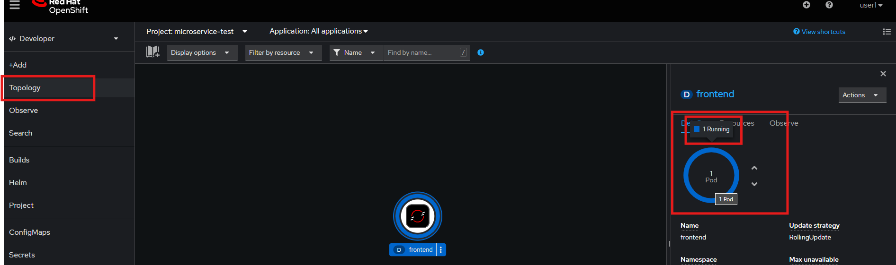
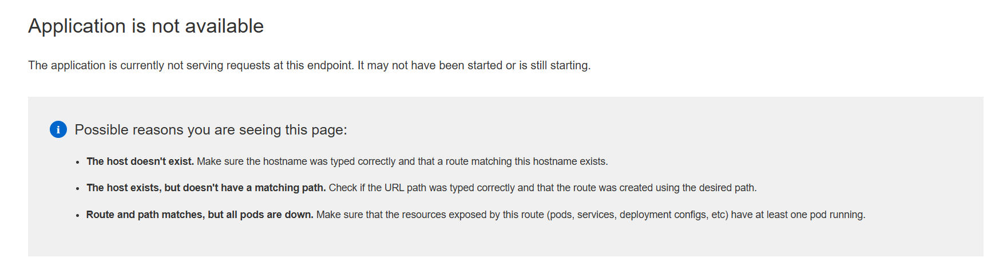

Use Case: E-Commerce Boutque Store
In this Hands-On-Labs, we deploy an e-commerce application, which is based on the Online Boutique, provided by Google Cloud Platform.
The deployment manifests are modified so that they could be deployed on an OpenShift Cluster. The User Interface of "Online Boutique" looks like this:

Architecture
On the main page of the Online Boutique, a frontend service forwards the requests to the 10 corresponding backend services, as shown in this architectur image:

All these 11 microservices are communicating over gRPC protocol.
Microservices
These 11 microservices are written in different programming languages and are responsible for a specific task in this e-commerce website:
| Service | Language | Description |
|---|---|---|
| frontend | Go | Exposes an HTTP server to serve the website. Does not require signup/login and generates session IDs for all users automatically. |
| cartservice | C# | Stores the items in the user's shopping cart in Redis and retrieves it. |
| productcatalogservice | Go | Provides the list of products from a JSON file and ability to search products and get individual products. |
| currencyservice | Node.js | Converts one money amount to another currency. Uses real values fetched from European Central Bank. It's the highest QPS service. |
| paymentservice | Node.js | Charges the given credit card info (mock) with the given amount and returns a transaction ID. |
| shippingservice | Go | Gives shipping cost estimates based on the shopping cart. Ships items to the given address (mock) |
| emailservice | Python | Sends users an order confirmation email (mock). |
| checkoutservice | Go | Retrieves user cart, prepares order and orchestrates the payment, shipping and the email notification. |
| recommendationservice | Python | Recommends other products based on what's given in the cart. |
| adservice | Java | Provides text ads based on given context words. |
| loadgenerator | Python/Locust | Continuously sends requests imitating realistic user shopping flows to the frontend. |
Prerequisites
Ensure that you have access to a OpenShift Cluster to deploy the manifests for the e-commerce application.
Note
If you do not already have access to a Demo Cluster, ask your training instructor! Or create a Demo Cluster by yourself via the following link: Red Hat Demo Cluster
Lets get started with the first Hands-On Session
1. Hands-On Lab
Tasks
Task 1: Deployment
-
Create your own Namespace (like your own project)
-
Create the frontend Deployment by importing the yaml template
- Go to the Github Repository and navigate over the e-commerce folder to the frontend folder and then to the deployment.yml
- Copy the content of the deployment.yml
-
Switch to the Openshift Console and paste the content into the Import Yaml field

-
Click on Create and you will create the frontend deployment
-
Go to Topology in Openshift Console and check on your newly created Pod
-
There is some problem with your Pod, it is not running! Find out what the problem is about!?
Do you need help?
If you cannot solve the problem, switch to the Solutions for Troubleshooting chapter on this website (scroll down
 )
) -
When you fixed the Problem, you maybe need to scale down and after that scale up your Pod again (so the changes are getting activated):
-
Give it a moment and wait until the Pod is running!

Task 2: Services
- Create a Service, which abstracts the frontend Deployment
-
Go to the Administrator view and search for services under the Networking section
-
Click on Create Service button
-
Enter all necessary information
Tip
If you are unsure how to enter it, have a look at the following Yaml file:
-
Verify if the Service is linked to the prior created frontend Pod
- Click on the frontend Service
-
Click on the Pods section:

-
You can also verify by going back to the Topology section and click on the frontend Pod. There is now under the Resources section also the frontend Service linked
Task 3: Routing
Create a Route by using the OpenShift UI (not by using the manifest files given in the Github)
-
Go to Administrator view and click on Routes under the Networking section and click on the Create Route button

-
Give the Route a name: frontend
- Select the correct frontend Service, which we created in Task 2
-
Select the correct Port (Service Port)
 TargetPort (Port on the Container)
TargetPort (Port on the Container)Note
Only fill out the fields which are necessary (marked with a red asterisk)
-
Click on Create to create the service

-
Give it a second

-
verify the Route: Go back to the Topology and click on the Route sign on the right hand side of the Pod
Info
You will see that the frontend is loading but you get an 500 Internal Server Error if you open the website. The Internal Server Error occurs, because you only have the frontend deployed and all of the backend is still missing. So don't worry, we will do this together step by step!

Task 4: Scaling
Scaling the Pod
-
Scale down the Pod to zero
-
Check the Route (Link) to the website - The website should not be reachable

-
Scale the Pod up again and verify the link to the website
Info
The frontend should be reachable again
Task 5: Microservices-Architecture
Create a Microservice Architecture by creating multiple other deployments and connect those by connecting the services
- Go into the Github Repository
- Lets start with the Ad-Service. You can find the Yaml files under the folder adservice
- Start with the serviceaccount.yml
- Go to the OpenShift Console and navigate to Administrator - User Management - ServiceAccounts
- Create a Service Account with the name: adservice in your created namespace (of Task 1)
- Now it is time to create the Deployment, copy the deployment.yml of the adservice from the GitHub Repository
- Go back to the OpenShift Console and navigate to: Administrator - Workloads - Deployments
- Click on Create Deployment
-
Click on YAML view, delete the default content and paste inside your copied deployment.yml
-
Lastly, create the regarding Service of the adservice Deployment
- Copy the service.yml from the adservice folder of the GitHub Repository and switch back to the OpenShift Console
-
Create the service in OpenShift by using the service.yml like we did with the deployment.yml of the adservice
Info
You can verify, if you go to the Topology and check if your Pod named adservice with the expecting Service is present
-
Now create the cartservice, the checkoutservice and the currencyservice by your own
Hint
For the three other microservices you can use the whole manifest.yml file and create the whole microservices (including ServiceAccount, Deployment and Service) all at once. For that navigate to Developer - +Add - Import YAML and paste in the whole manifest file. This saves time 
Solutions for Troubleshooting
Solution of Task 1
Frontend Pod was not created, but why?!
-
Check the Error message
-
Go to the Deployments (Hint: you can find it, if you switch to the Administrator and under Workloads)
-
Check the ReplicaSet of the frontend Deployment
-
Check the Events of the Replicaset
-
You got it! You are missing the expected Service Account
-
Create the missing frontend Service Account

Info
As you can see there are already three Service Accounts. These serviceaccounts are the default Service Accounts. But for our created frontend deployment we do not want to use one of the default once.

Hint
It is important that you name the Service Account exactly as mentioned in you Deployment.yml file